En GlobalPro, somos expertos en mecánica automotriz, electromecánica y mantenimiento. ¡Tu vehículo en las mejores manos! Servicio a domicilio en todo Santiago.
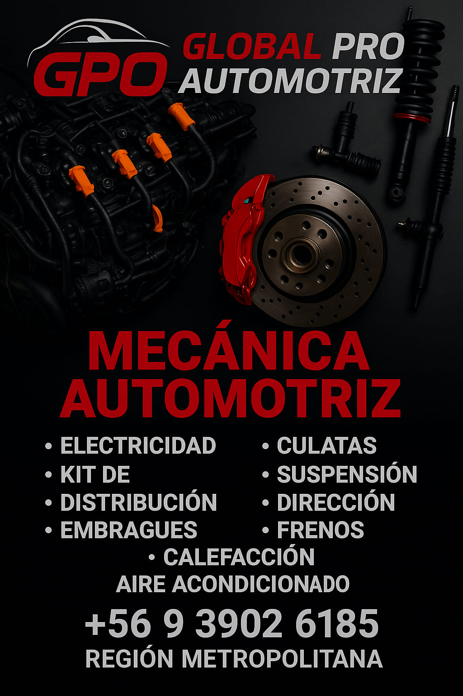
En GlobalPro, entendemos que tu tiempo es valioso y que una falla mecánica puede detener tu día. Por eso, nos especializamos en ofrecer el servicio de mecánico a domicilio más eficiente y confiable de Santiago. Ya no es necesario remolcar tu vehículo ni pasar horas esperando en un taller físico; nuestro equipo de expertos se desplaza hasta donde tú estés.
Somos tu taller móvil de confianza, equipado con herramientas de diagnóstico de última generación para resolver problemas desde el mantenimiento preventivo hasta reparaciones complejas de motor y frenos.
Tu confianza es nuestra mejor carta de presentación.
En GlobalPro, somos expertos en brindar soluciones de alto nivel para el cuidado de tu vehículo o flota. Si estás buscando un taller mecánico de confianza o necesitas un mecánico a domicilio con respuesta rápida, estamos estratégicamente ubicados y equipados para atenderte en cualquier punto de la Región Metropolitana.
Entendemos que el tiempo es tu recurso más valioso. Por eso, en GlobalPro hemos diseñado un servicio de mecánica a domicilio que lleva la calidad de un taller profesional directamente a tu ubicación. Ya sea que estés en tu casa, oficina o en plena ruta, si buscas un mecánico cerca de mí, nuestro equipo técnico se desplaza por todas las comunas de Santiago para resolver cualquier inconveniente.
En GlobalPro, nos enfocamos en la continuidad operativa. Realizamos una mantención profunda que garantiza el rendimiento óptimo, eliminando riesgos de fallas futuras.
Ejecutamos planes de mantención diseñados para maximizar la vida útil de los componentes.
¿No puedes traer tu vehículo al taller? Nuestro servicio de mecánico a domicilio es la solución ideal:
Unidades móviles equipadas para ofrecer mecánica a domicilio eficiente.
Taller mecánico con infraestructura de punta en Santiago.
Técnicos con años de experiencia en diversas marcas y modelos.
Reducimos los tiempos de inactividad mediante procesos estandarizados.
Ajustes, limpieza de inyectores y optimización de rendimiento.
Alternadores, motores de arranque y cableado complejo.
Revisión de fugas, presión de bombas y cambio de mangueras.
Verificación de neumáticos, alineación y balanceo.
No esperes a que una pequeña falla se convierta en un problema mayor. En GlobalPro te ofrecemos la comodidad de la mecánica a domicilio o la seguridad de nuestro taller mecánico centralizado.
Llamar Ahora WhatsAppQuedarse varado en medio de la carretera o sufrir un accidente inesperado es una de las situaciones más estresantes. En Global Pro Automotriz, ofrecemos auxilio mecánico de emergencia en toda la Región Metropolitana.
Haz clic en las imágenes para ampliarlas.
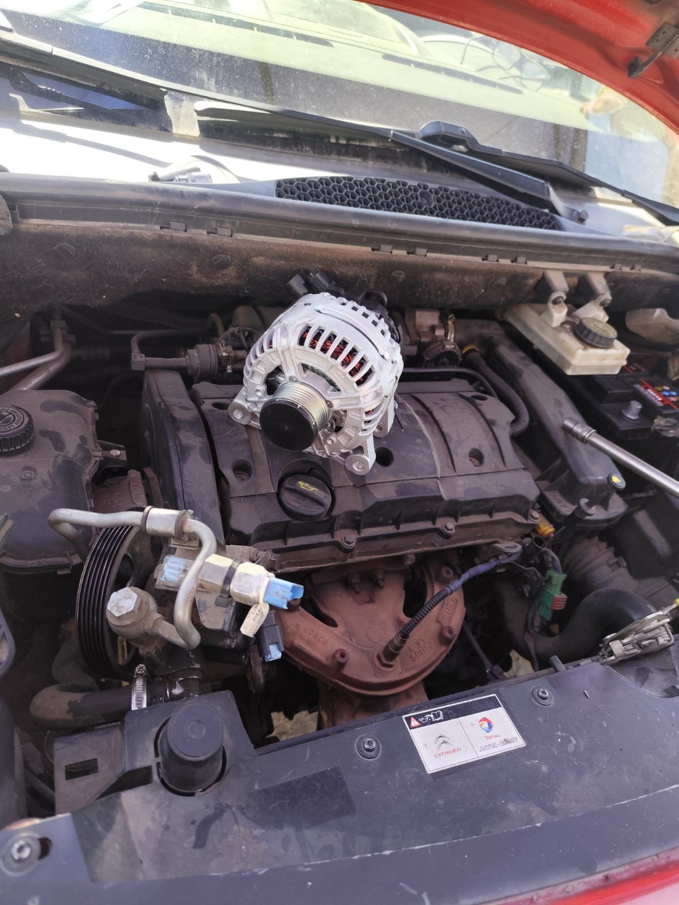
Servicio de mecánico a domicilio 24/7 especializado en rescatar conductores accidentados o con fallas súbitas en la vía.
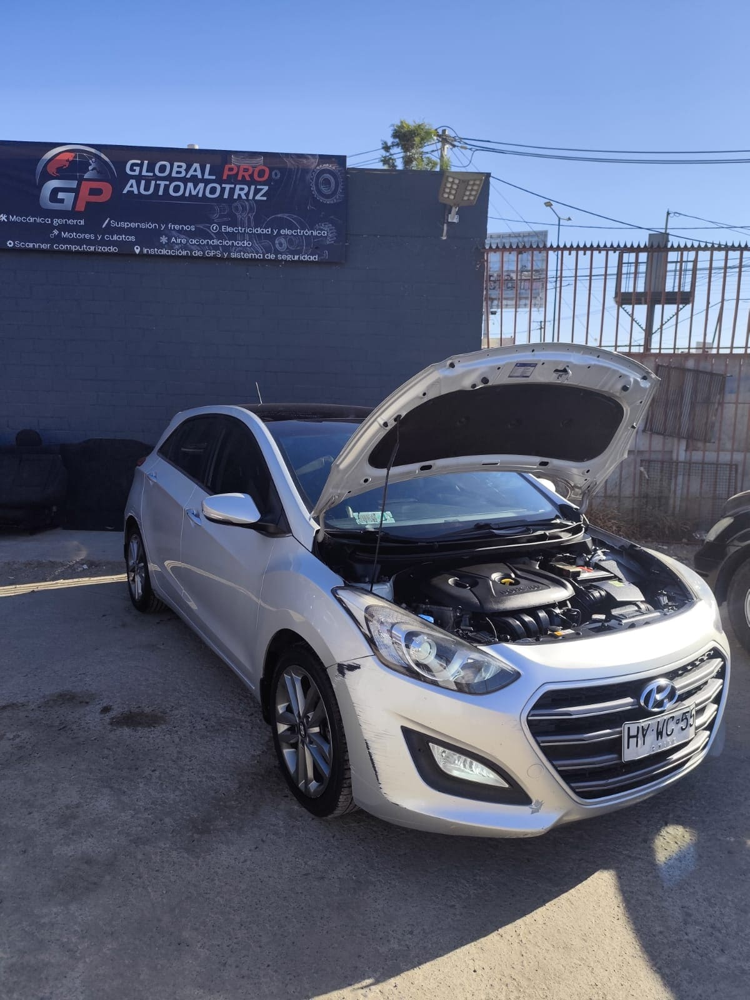
Mecánico automotriz a domicilio líder en diagnósticos rápidos con escaner automotriz en terreno.
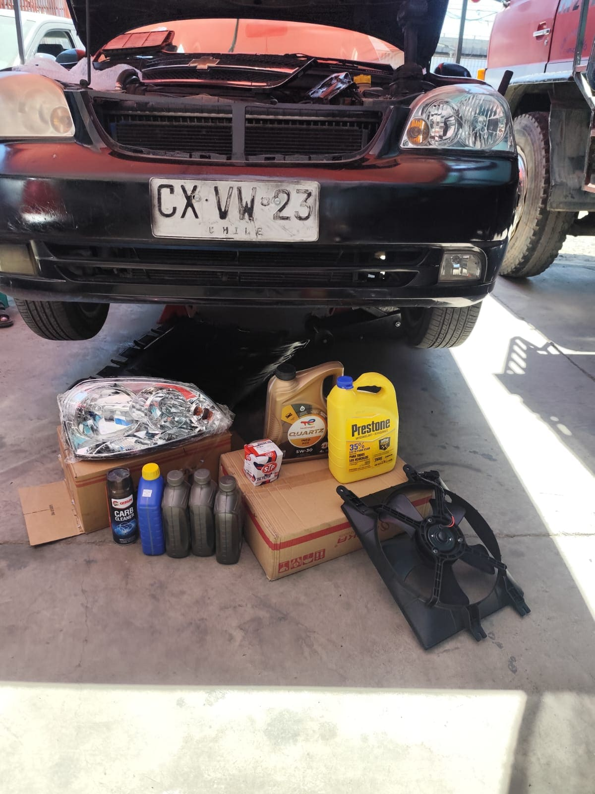
Cambio pastillas de freno a domicilio. Trabajamos con frenos ABS y realizamos reparación de calipers.
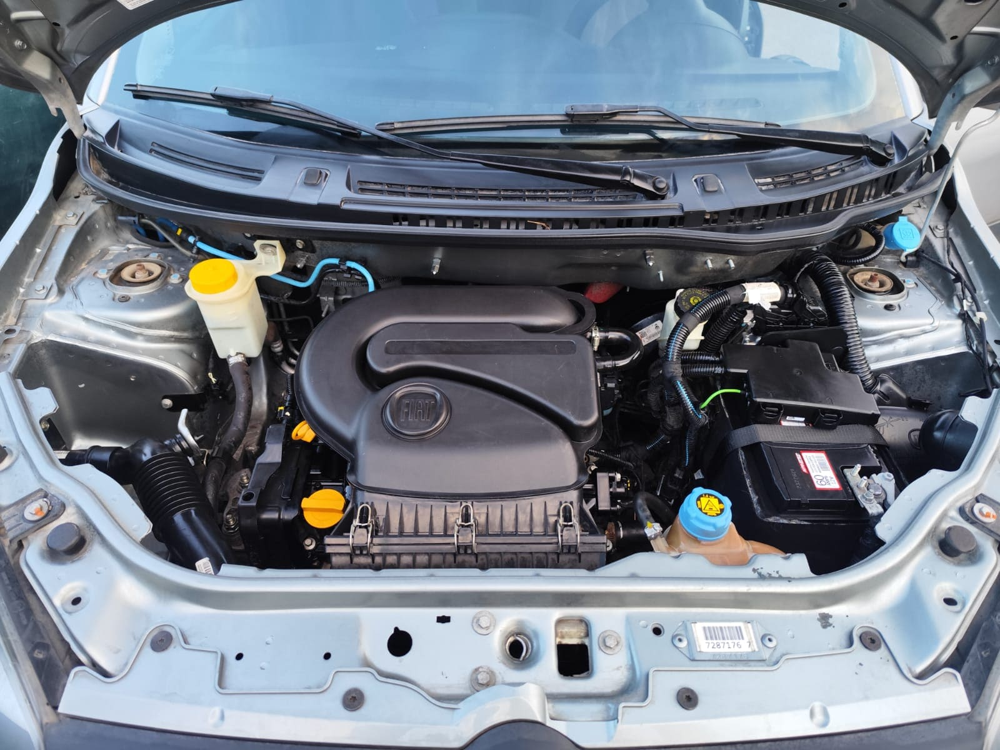
Cambio de amortiguadores a domicilio. Especialistas en taller mecánico suspensión.
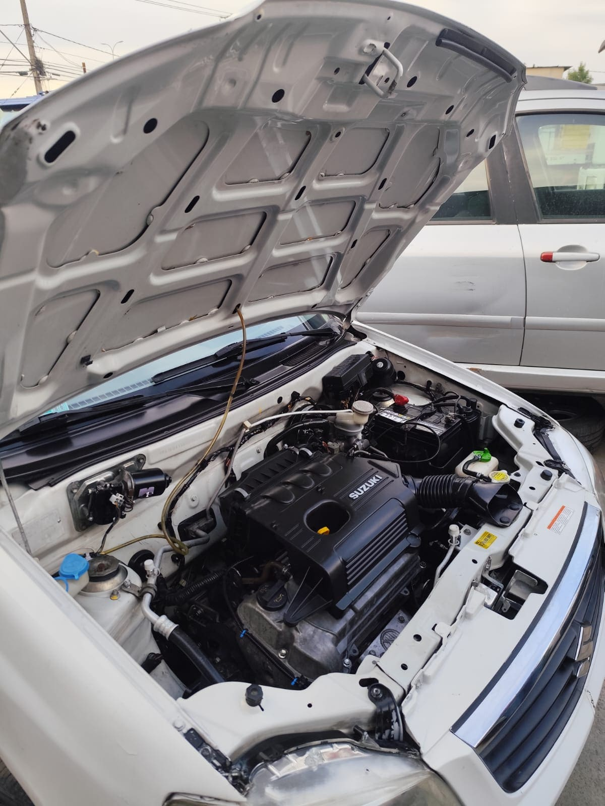
Aire acondicionado automotriz a domicilio. Recarga aire acondicionado auto y detección de fugas.
Utilizamos tecnología de punta para leer los códigos de falla de tu motor con escaner automotriz.
Todo lo que necesitas saber sobre nuestra especialización.
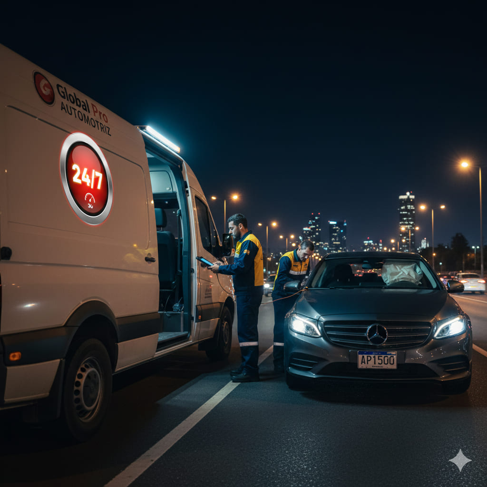
mecánica a domicilio en santiago : Urgencia / Rescate en ruta.
¿Te quedaste varado en plena autopista? No desesperes. Ofrecemos el servicio de mecánico a domicilio 24/7 más rápido de la Región Metropolitana. Si buscas un mecánico a domicilio cerca de mi que responda de inmediato, nuestro equipo está listo para el rescate.
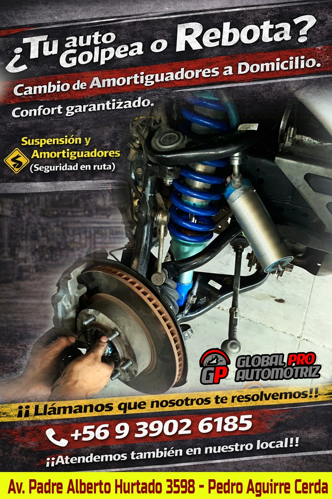
mecánica a domicilio en santiago : Mantenimiento Correctivo / Seguridad.
La seguridad de tu familia depende de un sistema de frenado impecable. Somos especialistas en frenos y ofrecemos el cambio pastillas de freno a domicilio con repuestos de alta calidad.
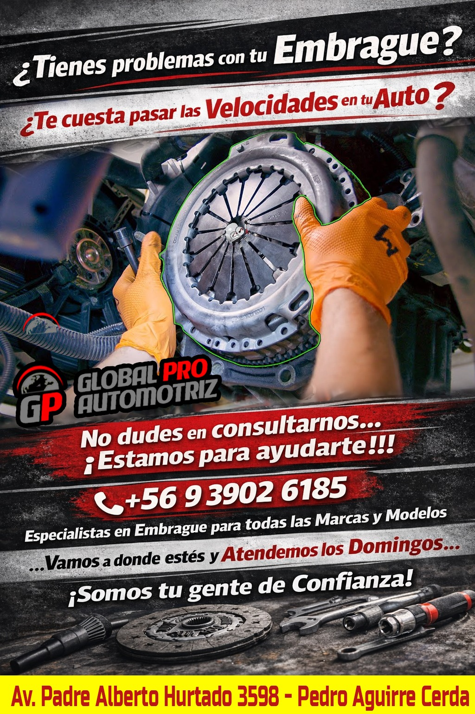
mecánica a domicilio en santiago : Confort / Verano.
Si buscas un taller aire acondicionado automotriz cerca de mi, Global Pro Automotriz te ofrece la solución definitiva: aire acondicionado automotriz a domicilio. Realizamos recarga y detección de fugas.
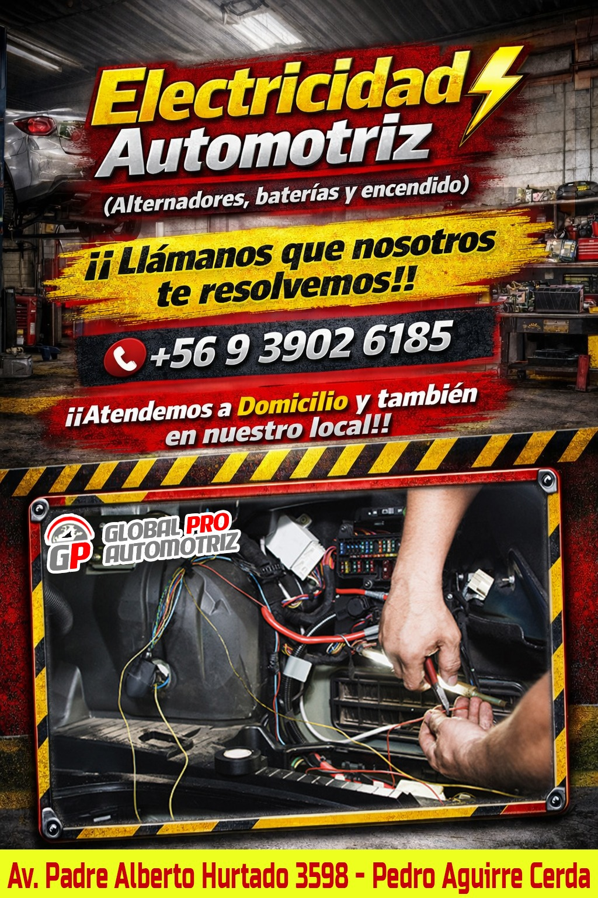
mecánica a domicilio en santiago : Fallas eléctricas / Tecnología.
Contamos con el mejor eléctrico automotriz a domicilio cerca de mi, capacitado para resolver desde alarmas automotriz hasta instalación de alarmas para autos.
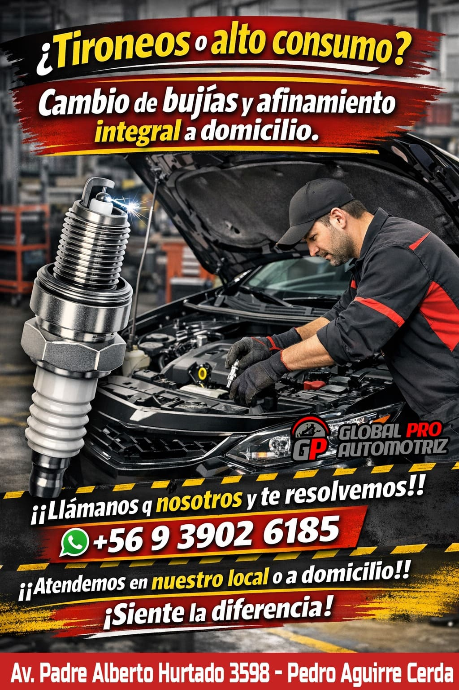
mecánica a domicilio en santiago : Cuidado del vehículo / Vida útil.
Prolonga la vida de tu motor con un mantenimiento automotriz de excelencia. Realizamos cambio de aceite, revisión de bujias y limpieza de inyectores a domicilio.
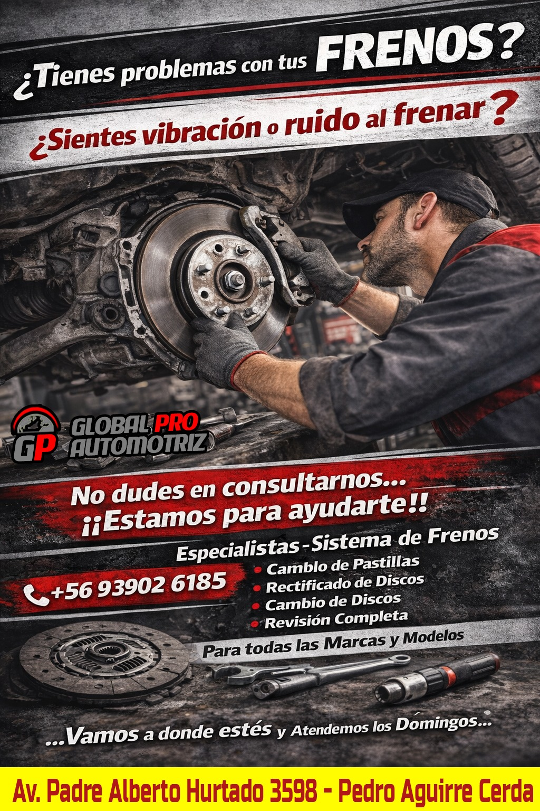
mecánica a domicilio en santiago : Auxilio en ruta / Accidentados.
Nuestro auxilio mecánico de emergencia está a una llamada de distancia. Enviamos un mecánico de emergencia 24/7 a tu ubicación exacta.
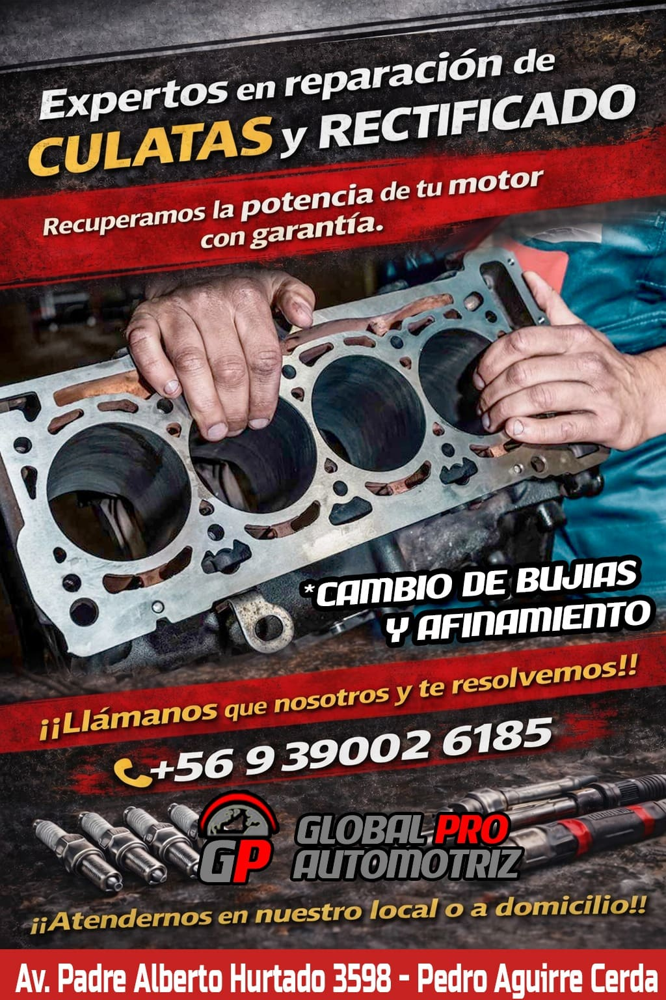
mecánica a domicilio en santiago : Nicho de marca / Confianza técnica.
Ofrecemos servicio de mecánico chevrolet a domicilio y contamos con técnicos expertos en vw y marcas americanas.
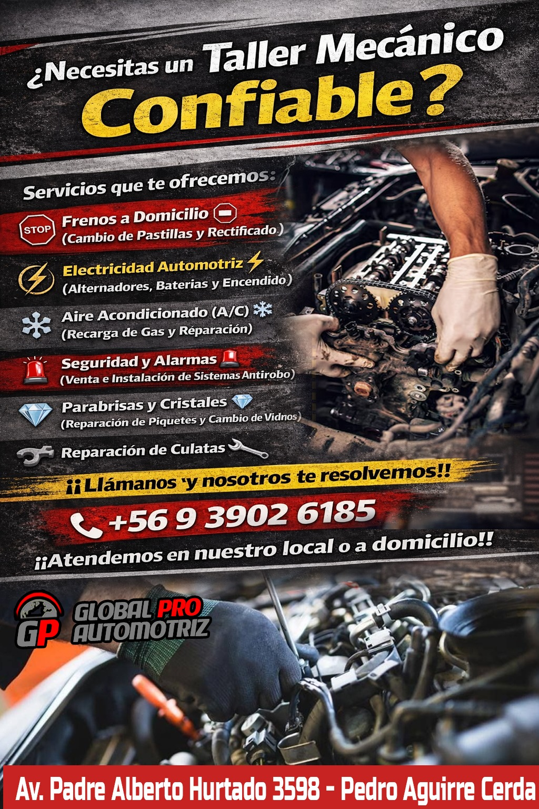
mecánica a domicilio en santiago : Diagnóstico electrónico.
Con nuestro servicio de escaner automotriz, identificamos códigos de error en segundos para un diagnóstico certero.
mecánica a domicilio en santiago : Llegamos a tu / Ubicación.
Ubicados estratégicamente en Pedro Aguirre Cerda, cubrimos todas las necesidades: cambio pastillas de freno, reparación aire acondicionado y mecánica general.
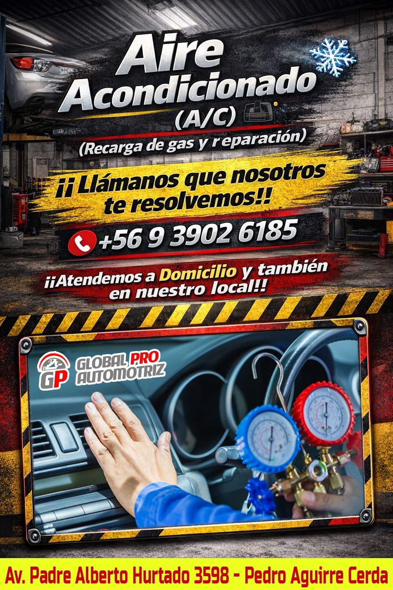
mecánica a domicilio en santiago : Reparación de A/C / Confort.
Nuestro servicio de recarga aire acondicionado auto santiago es el más completo del mercado. Garantizamos frescura en cada kilómetro.
Resolvemos tus dudas sobre Global Pro Automotriz.
Ofrecemos una solución completa para el mantenimiento y reparación de tu vehículo.
Realizamos mantenimiento preventivo, engrase general, cambio de aceite y revisión técnica.
Cotizar AhoraExpertos en electricidad automotriz, reparación de ECU, diagnóstico de fallas eléctricas.
Cotizar AhoraRecuperamos la estética de tu vehículo con reparación de carrocería, chapa y pintura.
Cotizar AhoraReparación y mantenimiento de aire acondicionado auto. Carga de gas, reparación de compresor.
Cotizar AhoraGarantizamos tu seguridad con la reparación de frenos (discos, pastillas), suspensión (amortiguadores).
Cotizar AhoraNo puedes venir? Nosotros vamos a ti. Ofrecemos servicio mecánico a domicilio y auxilio en carretera.
Cotizar Ahora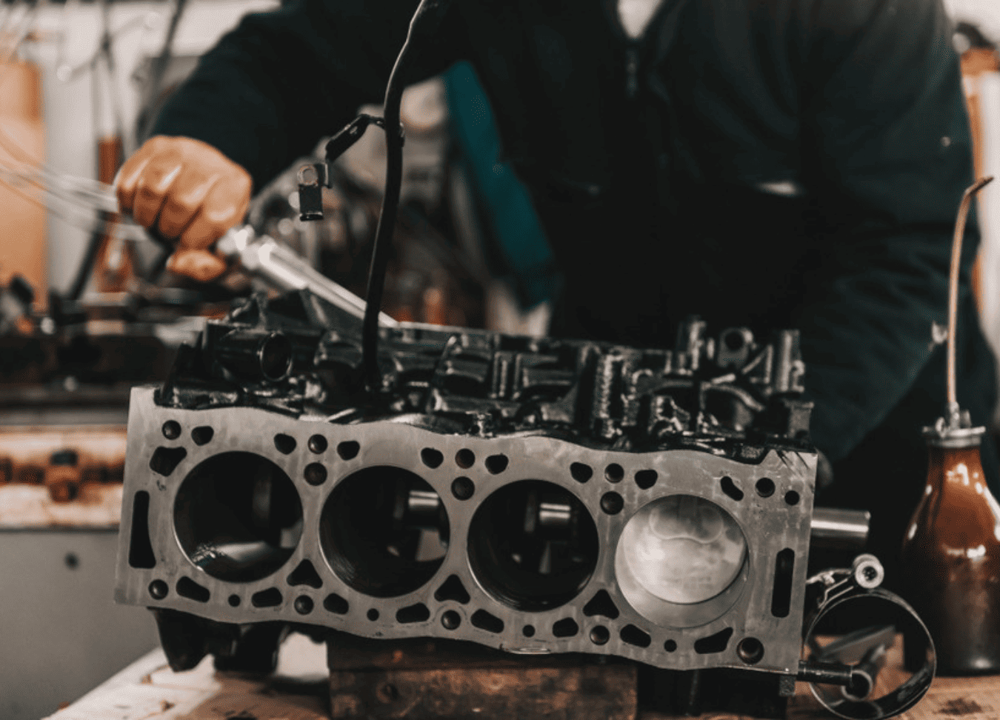
Somos más que un taller automotor, somos tu aliado en el cuidado de tu vehículo.
Trabajos garantizados con la más alta calidad de mano de obra.
Diagnóstico avanzado con las mejores herramientas del mercado.
Cubrimos todo el Área Metropolitana con nuestro mecánico a domicilio.
Te explicamos cada reparación para que tomes la mejor decisión.
Un vistazo a la calidad y el profesionalismo que aplicamos en cada servicio especializado.
Ofrecemos un servicio móvil especializado en la reparación de frenos. Nuestros mecánicos realizan el cambio de pastillas y discos.
Recuperamos tu confort con la reparación de aire acondicionado auto. Realizamos recarga de refrigerante.
En nuestro taller mecánico realizamos mantenimiento vehicular completo. Incluye cambio de aceite, filtros.
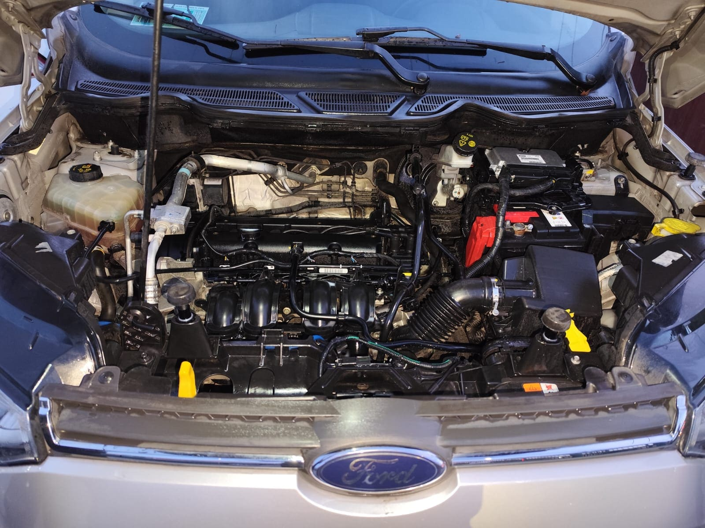
Especialistas en reparación de motor. Ofrecemos reconstrucción de motor y rectificación de culata.
Garantizamos estabilidad y control con la reparación de suspensión y dirección.
Resolvemos cualquier problema del sistema eléctrico. Reparamos alternador, batería, motor de arranque.
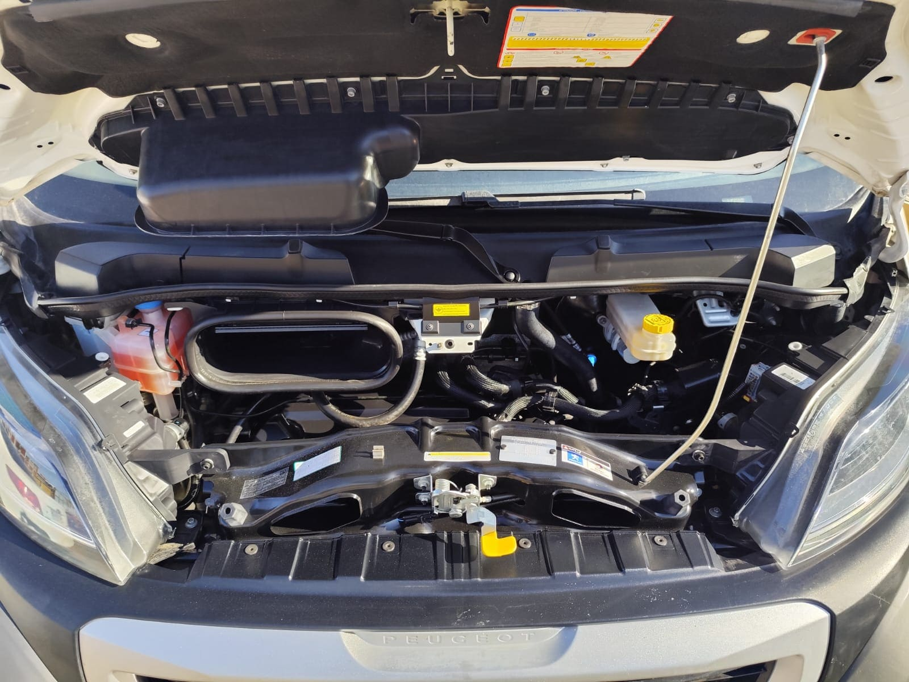
Expertos en reparación de transmisión automática y manual. Realizamos cambio de embrague.
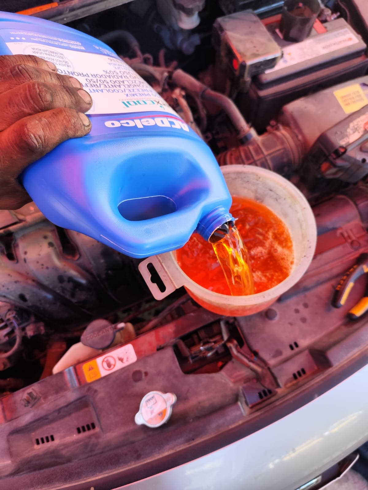
Optimizamos el rendimiento con la reparación de la inyección electrónica. Realizamos limpieza de inyectores.
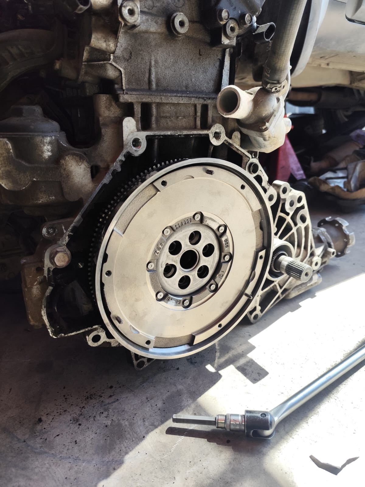
Devolvemos la estética y protección a tu vehículo. Especialistas en chapa y pintura automotriz.
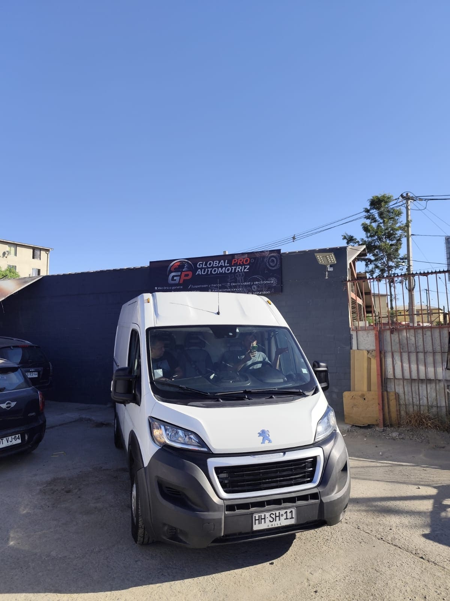
Creamos un plan de mantenimiento personalizado. Realizamos cambio de filtros y revisiones periódicas.

tapizado de volantes en Santiago para renovar la imagen de tu auto. Trabajamos cuero de alta calidad, mejorando el agarre y estética del volante.
IR AL SITIO WEB